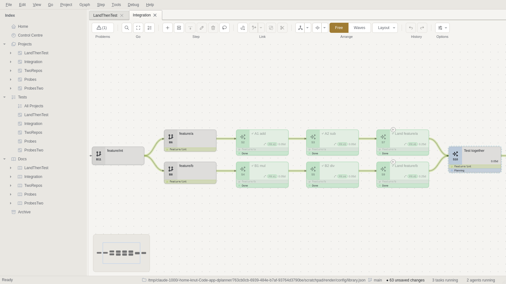
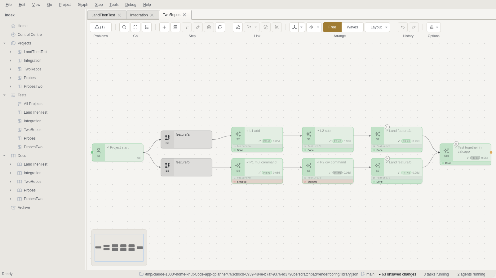

Two branches, one Test step
Two lines of work, each on its own feature branch, joining at one Test step. In one repository DPlanner plans and runs this end to end, in two different shapes. Across two repositories it reads the second repository's pull requests in the first one. In this run that marked a landing done while its PR was still open.
The answer
One repository: yes, with four places where a person or a workaround was needed. Two repositories: not without a person checking every PR, because every PR number is looked up in the primary repository.
reached the endThe second landing conflicted after the first merged. Send Back fixed it.
with a workaroundThe first run inside the nested branch failed until I cut feature/int by hand.
misread every PRFour steps were settled by hand. One was falsely done.
The three plans
The same pair of two-step branches (add/sub, mul/div), joined three ways. Both branches touch the same __init__.py and README on purpose, so whichever lands second must merge.
| Project | Shape | Where Test runs |
|---|---|---|
| LandThenTest | A1→A2 on feature/a and B1→B2 on feature/b, each landing on main. Test waits on both landings. | main, after a person merged both landings |
| Integration | The same two branches, cut off an outer feature/int (branch put over two existing branches nests them). Test is on feature/int, and feature/int then lands on main. | feature/int, before anything reaches main |
| TwoRepos | L1→L2 in lib (primary) on feature/a, and P1→P2 in app on feature/b. Each step's agent workplace names its repository. Test, in app, waits on both landings. | app's main, depending on lib's main |

feature/int, both landed, Test on feature/int. Nesting needed no new concept.
lib's PR #1. S4 and S5 read Stopped because I stopped their passes and settled the steps by hand.Findings
Twelve findings. Five are confirmed bugs with a line to fix. The rest are gaps where DPlanner knew enough to help and said nothing.
| Finding | Seen | Where |
|---|---|---|
| A step's PR is looked up in the primary repository | highA false done, a wrong PR written onto a step, a near-miss merge, a merge never noticed | github/cli.py:391 _step_repo; modules/__init__.py:2160 |
| A nested branch's first run fails before the outer branch exists | highsrc refspec origin/feature/int does not match any | branches/plan.py branch_plan; worktree.py _cut |
| On a non-working day a branch cut stays waiting | highEvery first step on every branch refused on a Sunday | planning/schedule.py:497 spent_since |
A detached playbook advance can be lost | mediumPR merged, pass stuck at Merging, no card (cause plausible, not proven) | supervisor.py:1218 discards its output |
| Simultaneous launches in one project | mediumAll but one refused with "changed on disk… run this again", after side effects | the CLI's open-and-write |
| Parallel landings into one base conflict silently | mediumThe second landing sat at ready to merge with a conflicting PR | no check exists |
| A worktree made early is never brought forward | mediumTest resumed on the old main; the agent fixed it itself | worktree.prepare |
| The briefing names the wrong repository | mediumAn app step is told it works in lib | protocol.py:161 plan_whereabouts |
| "Cannot proceed" shows as a permission denial | lowA card with no choices | execute.schema.json: done | asked | denied |
| A branch across two repositories | lowLint is silent; the launch error names the wrong cause | lint; worktree.prepare |
| Coordinator across repositories | read onlygh pr merge <n> with no -R; "the integrated branch" | agent_briefing/coordinator.py |
| Smaller points | lowOverlap advice; partial join only linted; refresh needed headless; plan never committed | see below |
Two repos, one PR lookup
DPlanner resolves every step's PR number in the project's primary repository, whatever the step's workplace. Both repositories numbered their PRs from #1, so every app PR was read as lib's PR with the same number.
Each verb that touches a PR (github set, github refresh, the playbook's progress, the window's refresher) asks _step_repo. That reads repository_facts(...).code_remote, the first code row. The worktree code already knows better: agent_briefing/worktree.py's code_placement uses the step's own row. The run hit all four ways this can go wrong:
| Step | What DPlanner did | What was true |
|---|---|---|
| S4 · app member | progress read lib PR #1, wrote its title, URL and merged onto S4, then blocked: "PR #1 merged into feature/a, but that did not accept the step" | app PR #1 was open, into feature/b |
| S5 · app member | progress found lib PR #2 open and refused only because its head branch differed | The head check is the one thing that kept it from merging the other repository's PR |
| S9 · app landing | false donegithub refresh: "1 step(s) merged and done" | app PR #3 still open; lib PR #3 had just merged into main |
| S10 · app Test | "1 PR(s) checked, 0 updated", silently, indefinitely | app PR #4 merged; lib has no PR #4 |
1 PR(s) checked, 1 updated, 1 step(s) merged and done
Land feature/b: done
github: {"branch": "feature/b", "pr_number": 3, "pr_state": "merged",
"pr_title": "S7: Land feature/a (add, sub)",
"pr_url": "https://github.com/Knutsi/temp-dplanner-test-lib/pull/3"}
{"state":"OPEN","title":"S9: Land feature/b (mul and div CLI commands)"}A false done on a landing frees everything that waits on it. Here that was the final Test, which would have started against an app without its mul/div work. With a window open, the PR refresher would do the same unattended.
The same project also showed four smaller gaps:
- The briefing tells an
appstep it works inKnutsi/temp-dplanner-test-lib(protocol.py:161usesfacts.code_label). - The coordinator's briefing merges with
gh pr merge <n>from the primary checkout. - A branch whose members sit in both repositories is not linted. Its launch fails with "there is no origin/feature/mix … a branch deleted after it landed".
- The canvas cannot show which repository a card belongs to.
What did work: each step's worktree opened in its own repository, and each repository's branch was cut there. The Test step in app found lib's main on its own and depended on it through a git+ssh URL. All 24 tests passed.
Nested branches
Planning a branch inside a branch is free: branch put over two existing branches nests them, and the canvas and the briefings read it right. Running it fails at the first step, because only the innermost branch gets cut.
branch_plan decides the cut for the innermost open stretch only. feature/a is "fresh", so it is created from origin/feature/int. But nothing had cut feature/int, because no step of its own had run yet:
dplanner: could not prepare the worktree …/s2-a1-add on agent/s2-a1-add: git push: error: src refspec origin/feature/int does not match any
It failed cleanly: no claim, no status, no worktree. One git push origin main:refs/heads/feature/int and the plan ran to the end. Inner landings opened their PRs against feature/int, merging there accepted them, and Test ran on the integrated branch.
The Sunday cut
Before any of that, every first step was refused: "'A1 add' waits on work not done yet: B6 'feature/a'". A cut is a wait of zero days. spent_since(day, today) is working_days_between − ½, which is −0.5 on a Sunday, and −0.5 is less than 0. Every branch in every plan is held until Monday. --anyway gets past it.
Parallel landings
When two landings target the same base, the second conflicts the moment the first merges, and DPlanner does not notice. Send Back was the right tool and the agent used it well. But the resolution skipped review, and the merged landing still needed a person's Accept.
- The first landing agent saw it coming. Its note N6 read: "whichever feature branch lands second will conflict on
calc/__init__.pyand the README list of functions, and should keep the entries from both sides". Nothing reads a note as an instruction. - After PR #6 merged, GitHub still reported PR #5 MERGEABLE, which was stale.
git merge-treeexited 1. The step sat at ready to merge. playbook send-backwith the conflict as the note: the landing mergedorigin/mainintofeature/bas a merge commit, kept both sides, and the conflict was gone. Same in the Integration project, intofeature/int.- After that execute, no Codex review ran again, because a person's send-back loops to the work and nothing follows it but the person. That is consistent with the rules, but it means the one hand-merged change got the least review.
- Into
main, the merge then left the step ready for review, because no gate had passed since its last work. Merged intofeature/int, the same merge accepted it. The two behave differently by design, but it surprised me.
DPlanner knows when two open landings share a base. When one merges, it could tell the other one to merge that base back in, instead of leaving it to GitHub's stale flag and a person's eye.
A stale Test worktree
A worktree is made on the first run and reused unchanged. Test, started early on purpose, resumed after both landings on a main that lacked feature/b. The agent brought its branch up to date itself; DPlanner did not.
- Started with
--anywaywhile onlyfeature/ahad landed, the Test agent did what its brief said: it found mul and div missing, wrote nothing, and set itself blocked. That was the right behaviour. - It had to report that as
"outcome": "denied", because the execute schema offers onlydone | asked | denied. The card read "The agent was denied a permission it needed. How should it go on?", with no choices. - When I answered after
feature/blanded, the run resumed in the same worktree, still at8738e75. The agent, not DPlanner, updated it to66320b4. Then 6 tests passed.
Two writers, one project
Parallel branches mean parallel runs in one project, and the project file is one writer at a time. A refused launch only costs a retry. A refused advance can leave a pass stuck with no sign of why.
- Six launches at once, two per project. In each project one was refused: "changed on disk since it was opened … nothing was written; run this again". The branch cut and the worktree had already been made. Both are idempotent, so a retry worked. A coordinator launching in parallel must retry too.
- Two
progressstages in Integration ended 2 s apart. One merged its PR on GitHub, but its pass sat at Merging: no record, no card, nothing in any log, because the detached advance's output goes nowhere.playbook advance S4by hand finished it. The likely cause is the same concurrent-write refusal, which nothing retries. Verdict: plausible, not proven.
What held up
The graph model and the agents were the strong half. Every refusal I aimed at the graph either fired or was named by lint.
- Overlap. Test linked straight to A2 and B2 is refused at launch ("it is on feature/a and feature/b, and neither is inside the other") and named by lint. The advice to "
branch removeone of them" misses the two shapes that work: link after both landings, or nest both in an outer branch. - Partial join. Test after Land feature/a and B2 lands on
feature/bwithout A's work. Lint says exactly that ("the branch was cut before that work, so this step's worktree will not have it"), but the launch is not refused. - Names. A second branch named
feature/ain one project is refused. - Members. In one repository,
progressmerged every member into its feature branch and accepted it. - Agents. They stopped rather than inventing missing code, predicted the conflict, resolved it when sent back, and found the sibling repository without being told how.
- Cost. About $10 of Claude turns plus nine Codex reviews, in roughly 90 minutes.
Blind spots beyond this run
Setups near this one that the run did not exercise, each with what would go wrong. The first is the one most likely to hit a real team.
| Setup | What happens | Basis |
|---|---|---|
| One change across two repos on the same branch name | Refused: "another branch in this project is already called feature/a". That is the usual convention for a cross-repo change. | Refusal seen in probe 4; that it hits this convention is inferred |
| Three or more branches into one base | Each landing conflicts after the one before it merges: N−1 send-backs, one after another | Follows from the run |
| Squash- or rebase-only repositories | Landings are told to merge, never rebase or squash. Branch protection that forbids merge commits stops every landing. | From the briefing |
| Auto-delete head branches | A landed branch vanishes, and any later run of its members reads "deleted after it landed". That is correct, but nothing warns beforehand. | From worktree.prepare |
| Two projects in one code repository | Branch names are unique per project only, so both can cut feature/a in the same repository | Inferred from probe 4's scope |
| Repo B consumes repo A | "A landed" is not "B can install A". There is no version pin or release in the model. Here the agent's git+ssh URL needs SSH to install. | The two-repo Test step |
| A window open during a two-repo run | Its PR refresher would make the false dones by itself, with nobody running a verb | modules/__init__.py:2160 |
| Headless runs over a day | The CLI never commits the plan: 64 uncommitted changes. Another machine sees nothing until someone saves. | Seen |
| A reviewer that cannot reach the network | Codex reviewed landings without checking the remote ("SSH/network unavailable") and passed them. The conflict was invisible to it. | Seen |
Suggested fixes
Ranked by what they prevent. The first three are small and remove the failures that need a person at every step. The rest make the parallel shape safe to leave alone.
- 1. One
repo_of(step), from the step's workplace, used bygithub set,refresh,progress, the window's refresher, the PR chip, the briefing's "code you are working in" and the coordinator'sgh … -R. This is one function replacing several readers. - 2. Clamp
spent_sinceat 0, or read a cut as done once its predecessors are. Add a test dated on a Sunday. - 3. Cut the enclosing stretches outside-in when a nested stretch is fresh.
- 4. Keep the detached advance's output in the run directory, and retry an advance refused by a concurrent write. Have
agent runretry the same way. - 5. Landings that share a base: when one merges, put a card on the others ("
mainmoved; merge it in") and re-run their gate after a send-back. - 6. A
blockedoutcome in the execute schema, so an honest stop reads as one. - 7. Bring a reused worktree forward (or brief it) when a prerequisite has landed since it was cut.
- 8. Lint a stretch whose members span repositories, and scope branch-name uniqueness per repository.
- 9. Better overlap advice: "link Test after both landings, or put both branches on one outer branch".
Evidence
Everything is in evidence/, next to this report. $T is the scratch directory; rebuild with T=… W=… bash setup.sh, then build.sh and probes.sh.
| File | What it shows |
|---|---|
setup.sh, build.sh, steps/ | The repositories, the isolated DPlanner, the three plans and each step's brief |
probes.sh → ev/probes.txt | Overlap, partial join, duplicate branch name, a branch across two repositories |
ev/probe3-nested-first-run.txt | The nested branch's first run |
why.py | Derived statuses on a Sunday: the cut reads Waiting |
ev/launch-*.txt | Six simultaneous launches: three refused, then retried |
ev/integration-s4-advance.txt | The lost advance, finished by hand |
ev/tworepos-s9-false-done.txt, ev/tworepos-s10-refresh.txt | The false done, and the merge never noticed |
ev/prompt-*.md | Briefings: nested bases, the landing's merge instructions, the wrong repository named |
ev/coordinator-ProbesTwo.md | The coordinator's briefing for a two-repository selection |